Desarrollo de Aplicaciones I · UADE · Guía de Ejercicios: MVVM y Repository (v1.0)
Proyecto: MvvmLab · Felipe Forte
El código está organizado por capas, con la misma estructura que el repositorio de referencia
PokedexAcademy-MVVM-Clean. Cada carpeta es un paquete de Kotlin (com.example.mvvmlab.presentation.nota, etc.).
En cada rama aparecen solo las carpetas que ese ejercicio usa.
app/src/main/java/com/example/mvvmlab/ ├── MainActivity.kt # punto de entrada: aloja la UI ├── MvvmLabApp.kt # Application propia (desde el Ej 11) ├── core/ │ ├── model/ # tipos comunes a varias pantallas (EstadoCarga) │ ├── navigation/ # rutas de navegación (desde el Ej 12) │ ├── theme/ # tema de Compose (Color, Theme, Type) │ └── util/ # utilidades (Fechas) ├── data/ # CÓMO se guardan los datos │ ├── local/ # Room: Entity, DAO, Database (Ej 14–15) │ ├── mapper/ # Entity ⇄ modelo de dominio │ └── repository/ # implementaciones de los contratos (memoria, archivos, Room) ├── domain/ # QUÉ es la app: Kotlin puro, sin Android │ ├── model/ # Nota, Registro, ResultadoLectura │ ├── repository/ # contratos (interfaces) de los Repository │ └── validacion/ # reglas de negocio (ValidadorNota, ValidadorRegistro) ├── presentation/ # MVVM: una carpeta por pantalla (UiState + ViewModel + Pantalla) └── di/ # quién crea las dependencias (ContenedorApp, Ej 11) app/src/test/java/com/example/mvvmlab/ ├── domain/validacion/ # tests de reglas ├── fake/ # Repository falsos para tests ├── presentation/ # tests de ViewModels └── util/ # MainDispatcherRule
| Capa | Regla |
|---|---|
domain/ | No importa nada de Android, Compose, Room ni archivos. Define los datos (model), los contratos (repository) y las reglas (validacion). |
data/ | Implementa los contratos de domain. Es la única capa que conoce archivos, SQL o Room. |
presentation/ | ViewModels y pantallas. Solo habla con los contratos de domain, nunca con data directamente. |
di/ | Conecta todo: elige qué implementación de data recibe cada ViewModel. |
domain/usecase/. Acá no se agregaron: la guía pide no crear capas “porque sí”, y en estos
ejercicios cada use case solo llamaría a un método del Repository. La teoría (diapositiva 4) aclara que la capa de dominio es opcional.
Consigna: tomar una pantalla donde todo está mezclado, marcar dónde se dibuja la interfaz, dónde se validan los datos, dónde se modifica la lista y dónde se guarda, y ubicar cada responsabilidad en View, ViewModel o Model/Repository. Todavía no se cambia la implementación.
UI = f(estado): la pantalla es una función del estado.
El criterio no es “¿declara una variable?” — hay variables en las tres capas. Las preguntas útiles son:
Ejemplo: en WhatsApp, el mensaje que estás escribiendo (borrador) es de la pantalla; los mensajes ya enviados se guardan.
@Composable
fun PantallaTareas(context: Context, modifier: Modifier = Modifier) {
var texto by remember { mutableStateOf("") } // (A)
var tareas by remember { mutableStateOf(listOf<String>()) } // (B)
var error by remember { mutableStateOf<String?>(null) } // (C)
Column(modifier.padding(16.dp)) { // (D)
Text("Mis tareas (${tareas.size})")
OutlinedTextField(value = texto, onValueChange = { texto = it })
Button(onClick = {
if (texto.isBlank()) { // (E)
error = "La tarea no puede estar vacía"
} else if (tareas.contains(texto)) { // (F)
error = "Esa tarea ya existe"
} else {
tareas = tareas + texto // (G)
File(context.filesDir, "tareas.txt") // (H)
.writeText(tareas.joinToString("\n"))
texto = "" // (I)
error = null
}
}) { Text("Agregar") }
error?.let { Text(it, color = Color.Red) } // (J)
LazyColumn { items(tareas) { Text(it) } } // (K)
}
}| Letra | Código | Qué hace | Dónde va |
|---|---|---|---|
| (A) | var texto | Borrador que escribe el usuario; no sobrevive al cierre | ViewModel |
| (B) | var tareas | Lista real de tareas; tiene que sobrevivir al cierre | Repository |
| (C) | var error | Mensaje de error actual (dato del estado de pantalla) | ViewModel |
| (D) | Column, Text, OutlinedTextField | Dibuja la pantalla | View |
| (E) | texto.isBlank() | Regla: no se agregan tareas vacías | ViewModel |
| (F) | tareas.contains(texto) | Regla: no se agregan tareas repetidas | ViewModel |
| (G) | tareas = tareas + texto | Agrega la tarea a la lista (el dueño del dato la modifica) | Repository |
| (H) | File(...).writeText(...) | Guarda las tareas en un archivo | Repository |
| (I) | texto = "" | Limpia el campo solo si la tarea se agregó bien (decisión sobre un dato del ViewModel) | ViewModel |
| (J) | error?.let { Text(it, Color.Red) } | Muestra el error en rojo (el error es del VM; dibujarlo es de la View) | View |
| (K) | LazyColumn | Muestra la lista en pantalla | View |
texto es del ViewModel, y quien es dueño de un dato es quien lo modifica.Text y Color.Red es de la View.Repository = dueño del dato · ViewModel = intermediario (lo pide y lo prepara) · View = solo lo muestra. La lista “verdadera” vive en un solo lugar: fuente de verdad única.
EVENTO (sube) operación
View ─────────────────────► ViewModel ──────────────► Repository
"el usuario apretó "agregá esta
Agregar con 'Estudiar'" tarea"
ESTADO (baja)
View ◄───────────────────── ViewModel
texto = "", error = null,
tareas = [..., "Estudiar"]1. ¿Qué trabajo tendría que seguir funcionando aunque mañana cambiemos Compose por otra interfaz?
Las reglas (E, F: no vacía, no repetida) y el manejo de datos (G, H: agregar y guardar).
Es decir, todo lo que va en ViewModel y Repository.
2. ¿Qué datos existen sólo mientras se está escribiendo un formulario?
texto (el borrador) y error (el mensaje actual). Son estado de pantalla y no se guardan en el archivo.
Context en un composable
PantallaTareas recibe un Context solo para poder escribir el archivo (H). La guía advierte
no aceptar soluciones que “llevan Context a todos los composables” o “abren archivos desde un botón”.
Es una pista de que el acceso a archivos está en el lugar equivocado: debería estar en el Repository.
| Elemento | Qué es |
|---|---|
Unresolved reference: X | Kotlin no sabe qué es X: falta el import, está mal escrito o la función/clase no existe. |
var x by remember { mutableStateOf(...) } | Estado observable que sobrevive a la recomposición. El by necesita los imports getValue/setValue. |
LocalContext.current | Forma de obtener el Context de Android dentro de un composable. |
modifier: Modifier = Modifier | Convención: permite que quien llama le pase padding, tamaño, etc. (por ejemplo el innerPadding del Scaffold). |
@Preview / @Composable | Anotaciones: “etiquetas” que siempre se aplican a una función. Solas, sin función debajo, no compilan. |
Consigna: pantalla de notas con título, contenido y botón Guardar. Definir una data class de estado
de pantalla con el contenido actual, el error de validación y si hay una operación en curso. Simular el guardado.
Identificar eventos separados para editar el título, editar el texto y pulsar Guardar. Todavía sin ViewModel.
Archivo: domain/model/Nota.kt + presentation/nota/ · Rama: ej02-estado-pantalla
data class Nota(val titulo: String, val contenido: String) // una nota YA guardada
data class NotaUiState(
val titulo: String = "", // lo escrito en el campo título
val contenido: String = "", // lo escrito en el campo contenido
val error: String? = null, // error de validación (null = sin error)
val guardando: Boolean = false, // operación en curso
val guardada: Nota? = null // última nota guardada (null = ninguna)
) {
val hayCambiosSinGuardar: Boolean get() = ... // propiedad CALCULADA
}
| Elemento Kotlin | Por qué se usa |
|---|---|
data class | Clase pensada para representar datos: genera equals, toString y copy. |
Campos val + copy(...) | El estado es inmutable: para cambiarlo se crea una copia nueva con los campos modificados. Cada cambio es un estado nuevo y Compose detecta que tiene que redibujar. |
String? / Nota? | Tipo anulable: el error o la nota guardada pueden no existir (null). |
Valores por defecto (= "") | NotaUiState() ya es el estado inicial: pantalla vacía. |
Propiedad calculada (get() = ...) | Se deduce de otros campos en vez de guardarse: no hay información duplicada que pueda quedar desincronizada. |
| Evento | Cambio de estado esperado |
|---|---|
| Edita el título | titulo = nuevo, error = null (el error deja de tener sentido al escribir) |
| Edita el contenido | contenido = nuevo |
| Pulsa Guardar con título vacío | error = "El título no puede estar vacío" |
| Pulsa Guardar con título válido | guardando = true, error = null |
| Pulsa Guardar mientras ya guarda | Sin cambios: se ignora (y el botón está deshabilitado) |
| Termina el guardado simulado | guardando = false, guardada = Nota(titulo, contenido) |
| Pieza | Rol |
|---|---|
Nota | Modelo: una nota ya guardada. |
NotaUiState | Estado de pantalla: qué se ve. |
alEditarTitulo, alEditarContenido, alPulsarGuardar, alTerminarGuardado | Funciones Kotlin puras: reciben el estado actual y devuelven el nuevo. No conocen Compose. En el Ej 3 se mudan al ViewModel casi sin cambios. |
PantallaNotaConEstado | Dueño del estado (provisorio, hasta el Ej 3) y del guardado simulado con delay. |
PantallaNota | View sin estado: dibuja el NotaUiState que recibe y avisa los eventos por callbacks. |
4 @Preview | Vacía · Error · Guardando · Guardada con cambios sin guardar. |
@Composable
fun PantallaNota(
estado: NotaUiState, // el estado BAJA
onTituloChange: (String) -> Unit, // los eventos SUBEN
onContenidoChange: (String) -> Unit,
onGuardar: () -> Unit,
modifier: Modifier = Modifier
)
La View no guarda ni decide nada: recibe un valor y funciones (callbacks) para avisar.
Ventaja concreta: como no tiene estado propio, se puede previsualizar en cualquier situación
pasándole un NotaUiState armado a mano. Es el mismo UDF del Ej 1, ahora en código.
(String) -> Unit = “una función que recibe un String y no devuelve nada”. Se pasa como parámetro:
onTituloChange = { estado = alEditarTitulo(estado, it) }. Dentro de la lambda, it es el único parámetro (el texto nuevo).
rememberCoroutineScope() + scope.launch { delay(1500); ... } espera 1,5 s sin congelar la pantalla.
Mientras tanto guardando = true → el botón muestra “Guardando...” y queda deshabilitado (enabled = !estado.guardando),
lo que evita la doble pulsación. En el Ej 3 esto pasa a viewModelScope.
1. ¿El texto ingresado es lo mismo que la nota ya guardada?
No. titulo/contenido son lo que el usuario está escribiendo (cambia en cada tecla); guardada es la
última versión confirmada. Por eso son campos distintos, y comparar ambos es lo que permite mostrar “Hay cambios sin guardar”.
2. ¿Conviene mostrar el mensaje de error como parte del estado?
Sí. Si el error está en el estado, la pantalla se reconstruye completa a partir de NotaUiState (UI = f(estado)): sobrevive a la
recomposición, se puede previsualizar y, con ViewModel (Ej 3), también a la rotación. Un mensaje “suelto” disparado desde el botón (un Toast)
no se puede consultar ni recuperar.
onTituloChange, onContenidoChange, onGuardar.NotaUiState): lo prueban las 4 previews, que dibujan cualquier situación sin ejecutar la app.
Recorrido del código del Ej 2, capa por capa: domain/model/Nota.kt (dato), presentation/nota/NotaUiState.kt (estado), presentation/nota/NotaEventos.kt (eventos) y presentation/nota/PantallaNota.kt (View).
En el Ej 1 la pantalla tenía variables sueltas (texto, tareas, error): para saber qué se estaba viendo había que mirar
tres cosas por separado, y cualquier parte del código podía cambiar cualquiera de ellas. La idea del Ej 2 es juntar todo en
un solo objeto, el estado de pantalla. Si tenés ese objeto, sabés exactamente cómo se ve la pantalla: UI = f(estado).
Nota: el datodata class Nota(
val titulo: String,
val contenido: String
)
Representa una nota ya guardada: el dato real, el que en ejercicios futuros va a ir al archivo.
data class = clase cuyo propósito es guardar datos; Kotlin le genera equals (comparar), toString (imprimir) y
copy (copiar cambiando algo). val = no se puede reasignar.
NotaUiState: la “foto” de la pantalla| Campo | Pregunta que responde | Qué dibuja |
|---|---|---|
titulo | ¿Qué hay escrito en el campo título? | El texto dentro del campo |
contenido | ¿Qué hay escrito en el campo contenido? | El texto dentro del campo |
error | ¿Hay un error de validación? | El mensaje rojo debajo del título |
guardando | ¿Se está guardando ahora? | Botón “Guardando...” y deshabilitado |
guardada | ¿Cuál es la última nota guardada? | La tarjeta de abajo |
String? y Nota?: el ? significa que puede ser null (puede no haber error, o ninguna nota guardada todavía).= "", = null, = false): por eso NotaUiState() sin parámetros es el estado inicial, la pantalla vacía.val: el estado no se modifica, se reemplaza por uno nuevo con copy.val antes = NotaUiState(titulo = "Hola") val despues = antes.copy(error = "algo") // mismo título, pero con error // "antes" no cambió. "despues" es un objeto NUEVO.
¿Por qué así? Compose redibuja cuando el estado es reemplazado por otro distinto. Si se modificara un objeto por dentro, Compose podría no enterarse.
hayCambiosSinGuardar
No está entre los paréntesis: no se guarda, se calcula cada vez que alguien la lee, comparando titulo/contenido con guardada.
Si fuera un campo más habría que acordarse de actualizarlo cada vez que cambia el título, el contenido o la nota guardada; un olvido y la pantalla
muestra algo falso. Calculada, no puede quedar desincronizada nunca.
Son el corazón del ejercicio. Todas tienen la misma forma: reciben el estado actual → devuelven el estado nuevo.
| Función | Qué hace |
|---|---|
alEditarTitulo(estado, nuevo)= estado.copy(titulo = nuevo, error = null) | Actualiza el título y borra el error: si decía “El título no puede estar vacío” y el usuario empieza a escribir, ese mensaje ya no tiene sentido. |
alEditarContenido(estado, nuevo)= estado.copy(contenido = nuevo) | Solo cambia el contenido. |
alPulsarGuardar(estado) | when evalúa en orden y usa la primera condición que se cumpla:
1) ¿ya se está guardando? → no hace nada; 2) ¿título vacío o solo espacios? → pone el error; 3) si no → guardando = true. |
alTerminarGuardado(estado) | Deja de estar “guardando” y lo escrito pasa a ser la guardada. |
@Composable, ni Text, ni nada de pantalla: son Kotlin puro. Son las reglas que en el Ej 1 dijimos que van al
ViewModel. En el Ej 3 se mudan ahí casi sin cambios.
PantallaNota: la View@Composable
fun PantallaNota(
estado: NotaUiState, // lo que tiene que dibujar → el estado BAJA
onTituloChange: (String) -> Unit, // funciones para AVISAR → los eventos SUBEN
onContenidoChange: (String) -> Unit,
onGuardar: () -> Unit,
modifier: Modifier = Modifier
)
(String) -> Unit?
El tipo de una función: “recibe un String y no devuelve nada” (Unit ≈ void de Java). () -> Unit no recibe nada
y no devuelve nada. A PantallaNota se le pasan funciones como parámetros, y ella las llama cuando el usuario hace algo.
Adentro, cada pieza lee del estado:
OutlinedTextField(
value = estado.titulo, // muestra lo que dice el estado
onValueChange = onTituloChange, // cuando el usuario escribe, AVISA
isError = estado.error != null, // si hay error, borde rojo
supportingText = { estado.error?.let { Text(it) } } // y el mensaje
)
Button(
onClick = onGuardar, // cuando aprieta, AVISA
enabled = !estado.guardando // deshabilitado mientras guarda
) { Text(if (estado.guardando) "Guardando..." else "Guardar") }
Lo que NO hace: no valida, no guarda, no decide nada. Si el usuario escribe, no cambia el título: solo avisa “escribieron esto”. Esto se llama state hoisting (elevar el estado): la pantalla no es dueña de su estado, lo recibe desde arriba.
PantallaNotaConEstado: el dueño (provisorio)@Composable
fun PantallaNotaConEstado(modifier: Modifier = Modifier) {
var estado by remember { mutableStateOf(NotaUiState()) }
val scope = rememberCoroutineScope()
PantallaNota(
estado = estado,
onTituloChange = { estado = alEditarTitulo(estado, it) },
onContenidoChange = { estado = alEditarContenido(estado, it) },
onGuardar = { ... },
)
}
mutableStateOf: Compose observa esta variable; cuando cambia, redibuja.remember: hace que el valor no se pierda cuando Compose redibuja.{ estado = alEditarTitulo(estado, it) } es una lambda (función sin nombre); it es el parámetro que recibe (el texto nuevo).
Se lee: “cuando cambie el título, reemplazá el estado por el resultado de alEditarTitulo”.onGuardar = {
estado = alPulsarGuardar(estado) // 1. aplicar la regla
if (estado.guardando) { // 2. ¿pasó la validación?
scope.launch { // 3. arrancar tarea en segundo plano
delay(1500) // 4. esperar 1,5 s (simula el disco)
estado = alTerminarGuardado(estado) // 5. listo
}
}
}
¿Por qué scope.launch? Si se esperara 1,5 s “normalmente”, la pantalla se congelaría. launch arranca una
corrutina: una tarea que espera sin bloquear la pantalla. Por ahora alcanza con: “launch + delay = esperar sin congelar la app” (se profundiza en el Ej 9).
Título “Parcial” escrito, el usuario aprieta Guardar:
1. VIEW Button → llama onGuardar() (EVENTO sube)
2. DUEÑO estado = alPulsarGuardar(estado)
3. REGLA título "Parcial" no está vacío → copy(guardando = true)
4. COMPOSE detecta estado nuevo → redibuja PantallaNota
5. VIEW lee estado.guardando = true → botón "Guardando..." deshabilitado
(ESTADO baja)
... 1,5 segundos ...
6. DUEÑO estado = alTerminarGuardado(estado)
7. REGLA copy(guardando = false, guardada = Nota("Parcial", ""))
8. COMPOSE redibuja
9. VIEW botón vuelve a "Guardar" + aparece la tarjeta "Última nota guardada"
Nadie toca la pantalla directamente. Solo se cambia el estado, y la pantalla se redibuja sola a partir de él.
@Preview(name = "2. Error de validación")
@Composable
fun PantallaNotaErrorPreview() {
MvvmLabTheme {
PantallaNota(
NotaUiState(
contenido = "Texto sin título",
error = "El título no puede estar vacío"
),
{}, {}, {}
)
}
}
Como PantallaNota solo dibuja lo que le pasan, se puede armar un estado a mano con cualquier situación y verla sin correr la app.
Los {} son lambdas vacías: en el preview los botones no necesitan hacer nada. Es la prueba del criterio de finalización:
si cualquier situación se dibuja pasando solo un NotaUiState, la pantalla se representa a partir de un único estado.
NotaUiState = todo lo que la pantalla necesita, en un objeto. Inmutable: se cambia con copy.PantallaNota = View sin estado. Recibe estado (baja) y callbacks (suben). No decide nada.PantallaNotaConEstado = dueño provisorio del estado. Conecta eventos con reglas.alEditarTitulo se sacara el error = null y quedara solo estado.copy(titulo = nuevo), ¿qué pasaría en la pantalla
al apretar Guardar con el título vacío y después empezar a escribir?
Consigna: mover la lógica del ejercicio anterior a una clase que extienda ViewModel. La pantalla recibe estado y
funciones de evento, sin decidir cómo se guarda una nota. Obtener el ViewModel con el mecanismo apropiado del proyecto y comprobar qué sucede al
rotar el emulador. Desafío: contador de intentos de guardado para observar la vida del ViewModel.
Rama: ej03-viewmodel · Archivos: presentation/nota/NotaViewModel.kt (ViewModel), presentation/nota/NotaUiState.kt (modelo y estado), presentation/nota/PantallaNota.kt (View)
En el Ej 2 el dueño del estado era un composable con remember. remember vive mientras vive la pantalla.
Pero cuando el teléfono rota, Android destruye y vuelve a crear la Activity (es un cambio de configuración; también pasa
al cambiar idioma, modo oscuro o tamaño de ventana). Con la Activity se va todo lo que estaba en remember: se borra lo escrito.
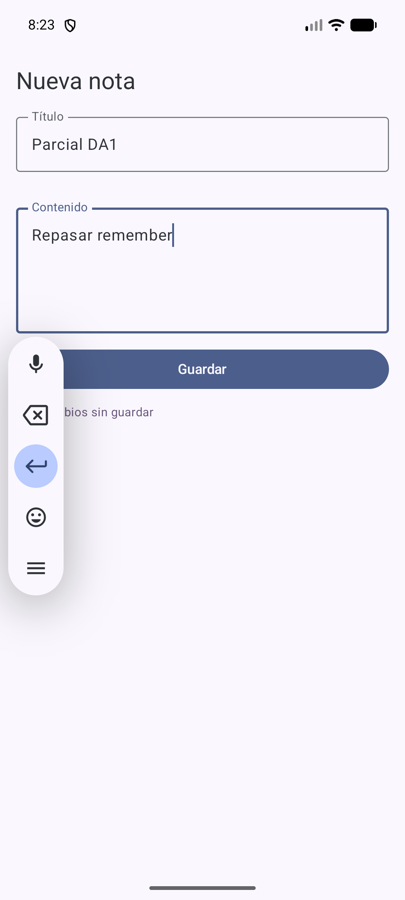
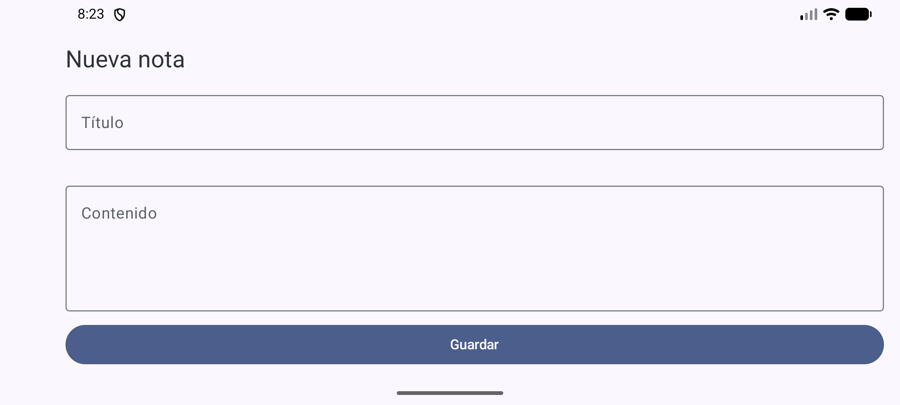
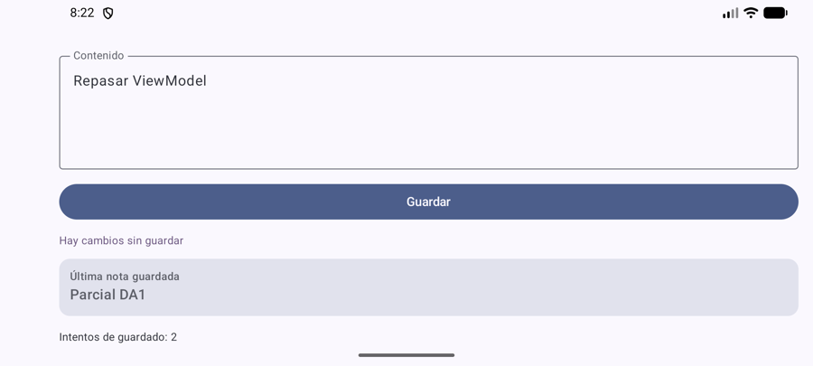
Capturas reales del emulador (Pixel 8).
NotaViewModelclass NotaViewModel : ViewModel() { // ": ViewModel()" = hereda de ViewModel
var estado by mutableStateOf(NotaUiState())
private set // afuera se LEE, solo el VM lo CAMBIA
var intentosGuardado by mutableStateOf(0) // desafío
private set
init { Log.d(TAG, "ViewModel CREADO") } // se ejecuta UNA vez al crearse
...
}
: ViewModel(): NotaViewModel hereda de la clase ViewModel de Android; eso es lo que le da la capacidad de sobrevivir a la rotación.NotaUiState del Ej 2: el estado no cambió, cambió quién es su dueño.private set: la pantalla puede leer viewModel.estado pero no puede hacer viewModel.estado = ....
Solo el ViewModel modifica su estado → UDF garantizado por el compilador. (En el Ej 4 esto se hace con StateFlow.)init { }: bloque que corre al construir el objeto. El Log.d permite ver en Logcat (filtro NotaViewModel) cuántas veces se crea.fun onTituloChange(nuevo: String) {
estado = estado.copy(titulo = nuevo, error = null)
}
fun onContenidoChange(nuevo: String) {
estado = estado.copy(contenido = nuevo)
}
fun onGuardar() {
if (estado.guardando) return // ya guardando: ignorar
intentosGuardado++ // desafío: cuenta TODOS los intentos
if (estado.titulo.isBlank()) {
estado = estado.copy(error = "El título no puede estar vacío")
return
}
estado = estado.copy(guardando = true, error = null)
viewModelScope.launch {
delay(1500) // guardado SIMULADO
estado = estado.copy(guardando = false,
guardada = Nota(estado.titulo, estado.contenido))
}
}
Son las mismas reglas que en el Ej 2 eran funciones sueltas (alEditarTitulo, alPulsarGuardar...). Se “mudaron” al ViewModel casi sin cambios.
Por eso valió la pena separarlas en el Ej 2.
viewModelScope en vez de rememberCoroutineScope
Las corrutinas lanzadas en viewModelScope viven lo que vive el ViewModel: si se rota a mitad del guardado, el guardado sigue y termina bien.
Con rememberCoroutineScope (Ej 2) se cancelaba junto con la pantalla. Si el ViewModel se destruye de verdad, sus corrutinas se cancelan solas.
onCleared(): el final de la vidaoverride fun onCleared() {
Log.d(TAG, "ViewModel DESTRUIDO")
}
Android lo llama cuando el ViewModel se destruye definitivamente (por ejemplo, salir de la pantalla con “atrás”). No se llama al rotar.
by viewModels()class MainActivity : ComponentActivity() {
private val notaViewModel: NotaViewModel by viewModels()
...
PantallaNotaConViewModel(viewModel = notaViewModel, ...)
}
by viewModels() no crea uno nuevo cada vez: le pide a Android “el ViewModel de esta pantalla”. La primera vez lo crea; si la Activity
se recrea (rotación), devuelve el mismo.activity-ktx, que ya estaba como dependencia de activity-compose. No hubo que agregar bibliotecas.val vm = NotaViewModel()
Crearlo “a mano” lo convierte en un objeto común: se crea uno nuevo en cada recreación (o peor, en cada recomposición si se hace dentro de un composable)
y el estado se pierde igual que con remember. La guía lo marca como propuesta a rechazar.
PantallaNota se reutiliza SIN CAMBIOS@Composable
fun PantallaNotaConViewModel(viewModel: NotaViewModel, modifier: Modifier = Modifier) {
Column(modifier.verticalScroll(rememberScrollState())) {
PantallaNota(
estado = viewModel.estado, // el estado BAJA
onTituloChange = viewModel::onTituloChange, // los eventos SUBEN
onContenidoChange = viewModel::onContenidoChange,
onGuardar = viewModel::onGuardar
)
Text("Intentos de guardado: ${viewModel.intentosGuardado}")
}
}
PantallaNota es exactamente la del Ej 2. Como era una View sin estado, no le importa quién es el dueño (antes un composable, ahora un ViewModel).
Este es el beneficio concreto del state hoisting.viewModel::onGuardar es una referencia a función: “pasá el método onGuardar de este objeto”.
Equivale a la lambda { viewModel.onGuardar() }, pero más corta.verticalScroll: al rotar, en horizontal la pantalla no entra entera; sin scroll, la tarjeta y el contador quedaban fuera de vista.| Pieza | Hace | NO hace |
|---|---|---|
| MainActivity | Obtiene el ViewModel y lo conecta con la pantalla. | ✅ No valida notas. |
| PantallaNota | Dibuja estado, avisa eventos. | No decide, no guarda. |
| NotaViewModel | Es dueño del estado, aplica reglas, coordina el guardado. | ✅ No llama composables; no conoce la Activity. |
| Prueba | Resultado observado |
|---|---|
Rotar con Ej 2 (remember) | Título y contenido se borran. |
| Rotar con Ej 3 (ViewModel) | Se conservan título, contenido, nota guardada e intentos: 2. Logcat: ViewModel CREADO aparece una sola vez (rotando ida y vuelta). |
App a segundo plano + adb shell am kill (Android mata el proceso) y volver | Pantalla vacía, intentos: 0. Logcat: un segundo ViewModel CREADO con otro identificador. |
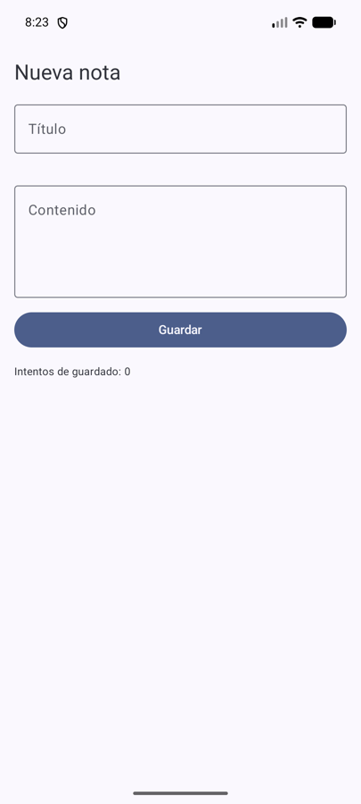
| Recomposición | Rotación | Muerte del proceso | |
|---|---|---|---|
remember | ✅ | ❌ | ❌ |
rememberSaveable | ✅ | ✅ | ✅* (datos chicos) |
| ViewModel | ✅ | ✅ | ❌ |
| Repository + archivo / Room | ✅ | ✅ | ✅ |
* Solo si el proceso lo mató Android (falta de memoria); si el usuario cierra la app a propósito, también se pierde.
1. ¿Qué problema resuelve el ViewModel?
Dos cosas: (a) sobrevive a los cambios de configuración (rotación, idioma, modo oscuro): el estado de pantalla y las operaciones en curso no se pierden
cuando Android recrea la Activity; (b) saca la lógica de la UI: las reglas quedan en una clase Kotlin que no dibuja ni conoce la Activity,
y la pantalla solo muestra estado y avisa eventos.
2. ¿Qué sucederá si el proceso se elimina completamente?
El ViewModel vive en memoria, dentro del proceso: si Android lo mata (por falta de memoria con la app en segundo plano) o el usuario
la cierra, el ViewModel muere con él y al volver se crea uno nuevo, vacío. Se pierde todo (lo comprobamos). Un ViewModel no es persistencia.
Para sobrevivir a eso: lo escrito a medias, con SavedStateHandle/rememberSaveable; los datos reales, con un Repository que guarde en
archivo o Room (Ej 6 en adelante).
NotaUiState y PantallaNota no cambian.by viewModels(), nunca con NotaViewModel() a mano.private set: la pantalla lee el estado pero no puede cambiarlo.viewModelScope: corrutinas que viven lo que vive el ViewModel.Consigna: exponer desde el ViewModel un StateFlow de sólo lectura y mantener mutable su implementación. En Compose
recolectarlo con la API consciente del ciclo de vida (collectAsStateWithLifecycle). Hacer que editar un campo cambie el estado visible.
Desafío: registrar cambios puntuales y comprobar que editar un campo no borra el otro.
Rama: ej04-stateflow · Archivo principal: presentation/nota/NotaViewModel.kt
En el Ej 3 el estado era un mutableStateOf (una API de Compose) dentro del ViewModel. Funciona, pero ata el ViewModel a Compose.
StateFlow es una API de Kotlin (corrutinas): el ViewModel queda independiente de la interfaz, y es lo que usan Room, los
Repository y casi toda la documentación oficial.
.value) y avisa a quien lo observe cada vez que cambia.
Es el patrón Observer de la teoría: el ViewModel produce, la pantalla se suscribe y reacciona. MutableStateFlow se puede escribir;
StateFlow solo se puede leer.
class NotaViewModel : ViewModel() {
private val _uiState = MutableStateFlow(NotaUiState()) // PRIVADO: solo el VM escribe
val uiState: StateFlow<NotaUiState> = _uiState.asStateFlow() // PÚBLICO: solo lectura
}
_uiState) marca la versión privada y mutable.asStateFlow() devuelve una vista de solo lectura del mismo flujo: aunque alguien intente castearla, no puede escribir.private set del Ej 3.update { }fun onTituloChange(nuevo: String) {
_uiState.update { it.copy(titulo = nuevo, error = null) }
}
fun onContenidoChange(nuevo: String) {
_uiState.update { it.copy(contenido = nuevo) }
}
update { actual -> nuevo } toma el valor actual y lo reemplaza por el que devuelve la lambda (it = estado actual).
Cada evento hace copy solo del campo que le corresponde → editar el título nunca borra el contenido (desafío).
Además update es atómico: si dos cambios llegan casi juntos, ninguno pisa al otro.
collectAsStateWithLifecycle@Composable
fun PantallaNotaConViewModel(viewModel: NotaViewModel, modifier: Modifier = Modifier) {
val estado by viewModel.uiState.collectAsStateWithLifecycle()
PantallaNota(
estado = estado,
onTituloChange = viewModel::onTituloChange,
onContenidoChange = viewModel::onContenidoChange,
onGuardar = viewModel::onGuardar
)
}
State de Compose → cuando llega uno nuevo, se recompone.collectAsState(), seguiría recolectando en segundo plano.remember con el título): lee siempre la del ViewModel (criterio de finalización).PantallaNota y NotaUiState no cambiaron.collectAsStateWithLifecycle vive en androidx.lifecycle:lifecycle-runtime-compose, que el proyecto no tenía. Se agregó en
libs.versions.toml con versión 2.10.0, la misma de lifecycle que ya usaba el proyecto (no se actualizó nada más).
La guía la nombra explícitamente como la API esperada.
NotaViewModel)titulo -> titulo='Parcial D' contenido='Repasar StateFlow' error=null guardando=false titulo -> titulo='Parcial DA' contenido='Repasar StateFlow' error=null guardando=false titulo -> titulo='Parcial DA1' contenido='Repasar StateFlow' error=null guardando=false
Se escribió el contenido y después se siguió editando el título: el contenido se mantiene en cada cambio. ✅
1. ¿Por qué la pantalla no debería poder modificar directamente _uiState?
Porque rompería el flujo unidireccional: el ViewModel dejaría de ser el único dueño del estado y cualquier pantalla podría saltearse las reglas
(por ejemplo, poner guardando = false a mano o guardar un título vacío). Si solo el ViewModel escribe, cada cambio pasa por un evento
con nombre (onGuardar...) y es fácil saber quién cambió qué. El compilador lo garantiza: _uiState es privado.
2. ¿Qué parte se recompone?
Cuando llega un estado nuevo se vuelve a ejecutar PantallaNotaConViewModel (es quien lee estado) y, dentro de PantallaNota,
Compose redibuja solo lo que depende de valores que cambiaron: al escribir en el título se actualiza ese OutlinedTextField y el aviso de
“cambios sin guardar”; partes cuyos parámetros no cambiaron (el texto fijo “Nueva nota”, la tarjeta de la nota guardada) se saltean.
_uiState: MutableStateFlow privado + uiState: StateFlow público de solo lectura._uiState.update { it.copy(...) }: atómico y sin pisar otros campos.collectAsStateWithLifecycle() y no guarda copias propias.Consigna: agregar reglas: título no vacío, contenido de al menos diez caracteres y prohibición de guardar dos veces mientras se
procesa una solicitud. Ubicar las reglas fuera de la vista. Mostrar errores cerca de los campos, sin diálogos para cada tecla.
Desafío: probar espacios en blanco, una nota válida y dos pulsaciones seguidas.
Rama: ej05-validacion · Archivos nuevos: domain/validacion/ValidadorNota.kt, domain/validacion/ValidadorNotaTest.kt
Si la validación se escribe dentro del onClick del botón (como en la pantalla del Ej 1), la regla queda mezclada con la interfaz:
no se puede probar sin abrir la pantalla, no se puede reutilizar y, si mañana se guarda desde otro lugar (otro botón, un atajo), hay que copiarla.
La regla es del negocio, no del botón.
ValidadorNota: las reglas en Kotlin purodata class ErroresNota(val titulo: String? = null, val contenido: String? = null) {
val hayErrores: Boolean get() = titulo != null || contenido != null
}
object ValidadorNota {
const val MIN_CARACTERES_CONTENIDO = 10
fun validar(titulo: String, contenido: String): ErroresNota = ErroresNota(
titulo = if (titulo.isBlank()) "El título no puede estar vacío" else null,
contenido = if (contenido.trim().length < MIN_CARACTERES_CONTENIDO)
"El contenido debe tener al menos $MIN_CARACTERES_CONTENIDO caracteres" else null
)
}
object: un singleton, una clase con una única instancia. Sirve para funciones sin estado: se llama directo, ValidadorNota.validar(...).isBlank() vs isEmpty(): " ".isEmpty() es false, pero " ".isBlank() es true. Con isBlank un título de solo espacios es inválido.trim() saca los espacios de los extremos antes de contar: " corto " tiene 11 caracteres pero solo 5 reales.ErroresNota tiene un error por campo: así cada mensaje se puede mostrar al lado de su campo.const val: constante conocida en compilación; el número 10 está en un solo lugar.fun onGuardar() {
val actual = _uiState.value
if (actual.guardando) return // regla 3: no guardar dos veces
val errores = ValidadorNota.validar(actual.titulo, actual.contenido) // reglas 1 y 2
if (errores.hayErrores) {
_uiState.update { it.copy(errorTitulo = errores.titulo, errorContenido = errores.contenido) }
return
}
_uiState.update { it.copy(guardando = true) }
viewModelScope.launch { delay(1500); _uiState.update { it.copy(guardando = false, guardada = ...) } }
}
enabled = !estado.guardando en el botón es la ayuda visual (el usuario ve que no puede tocar). if (actual.guardando) return
en el ViewModel es la regla: aunque llegaran dos clics antes de que el botón se deshabilite, el segundo se ignora. La regla no puede
depender de que la vista se dibuje a tiempo.
NotaUiState reemplaza error por errorTitulo y errorContenido. La vista solo decide cómo mostrarlos:
OutlinedTextField(
value = estado.contenido, onValueChange = onContenidoChange,
isError = estado.errorContenido != null, // borde rojo
supportingText = { estado.errorContenido?.let { Text(it) } } // mensaje debajo del campo
)
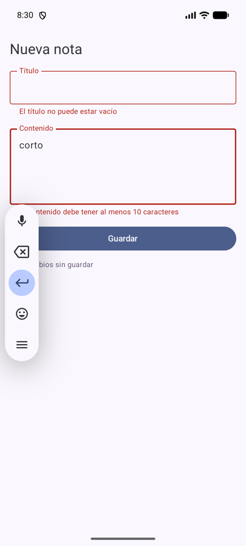
fun onTituloChange(nuevo: String) {
_uiState.update { it.copy(titulo = nuevo, errorTitulo = null) } // solo el error del título
}
Cuando el usuario edita ese campo: indica que lo está corrigiendo y no lo molesta en cada tecla. Se limpia solo el error del campo editado; el del otro campo sigue visible hasta que lo corrija. La validación completa se vuelve a hacer al pulsar Guardar.
app/src/test/.../ValidadorNotaTest.kt — tests JUnit que corren en la computadora, sin emulador (click derecho → Run):
| Test | Comprueba | Resultado |
|---|---|---|
tituloSoloEspacios_esInvalido | " " no es un título válido | ✅ |
contenidoConEspaciosAlrededor_noCuentaLosEspacios | " corto " no alcanza los 10 | ✅ |
contenidoDeExactamente10Caracteres_esValido | Borde: 10 caracteres es válido | ✅ |
notaValida_noTieneErrores | Una nota correcta pasa | ✅ |
ambosCamposMal_informaAmbosErrores | Se informan los dos errores juntos | ✅ |
Dos pulsaciones seguidas (en el emulador, dos toques casi simultáneos): Logcat muestra un único guardando '...' → se guardó una sola vez. ✅
1. ¿Cuál es una regla de negocio y cuál es una decisión visual?
Regla de negocio: “el contenido debe tener al menos 10 caracteres”, “no se guarda dos veces a la vez” — valen igual en Android, web o una API.
Decisión visual: mostrar el error en rojo debajo del campo, deshabilitar el botón, el texto “Guardando...”. Si cambio la interfaz, las
decisiones visuales cambian; las reglas no.
2. ¿En qué momento conviene limpiar un mensaje de error?
Cuando el usuario modifica el campo que lo causó (y solo ese error). Limpiarlo antes (o validar en cada tecla mostrando errores desde la primera letra)
molesta; no limpiarlo nunca deja un mensaje desactualizado mientras el usuario ya lo está corrigiendo.
ValidadorNota (Kotlin puro) → se prueban sin emulador.Consigna: definir un contrato NotaRepository con operaciones para obtener, guardar y eliminar notas. Implementar primero
una versión en memoria. El ViewModel sólo habla con el contrato. Decidir si el resultado se devuelve como valor puntual o como Flow y justificarlo.
Desafío: reemplazar la implementación por otra lista precargada sin modificar el composable.
Rama: ej06-repository · Archivo nuevo: domain/repository/NotaRepository.kt
Hasta el Ej 5 el ViewModel “simulaba” guardar. Pero el ViewModel no debería saber dónde se guardan los datos (memoria, archivo, base de datos, internet): su trabajo es coordinar la pantalla. El Repository es la pieza de la capa de datos que esconde ese “dónde” detrás de un contrato. Es la (G) y la (H) de la tabla del Ej 1.
interface
Una interface dice qué operaciones existen, sin decir cómo se hacen. Varias clases pueden implementarla
(: NotaRepository), cada una a su manera. Quien usa la interfaz no sabe ni le importa cuál le tocó.
interface NotaRepository {
suspend fun obtenerTodas(): List<Nota>
suspend fun guardar(nota: Nota) // si ya existe ese id, la reemplaza
suspend fun eliminar(id: String)
}
suspend: la operación puede tardar (disco, red) y se ejecuta dentro de una corrutina sin bloquear la pantalla.
Solo se puede llamar desde otra función suspend o desde launch.Nota ahora tiene id: con varias notas, el Repository necesita saber cuál eliminar o reemplazar.
El ViewModel lo genera con UUID.randomUUID().toString() (un identificador único al azar).class NotaRepositoryEnMemoria : NotaRepository { // empieza vacía
private val notas = mutableListOf<Nota>()
override suspend fun obtenerTodas(): List<Nota> { delay(300); return notas.toList() }
override suspend fun guardar(nota: Nota) {
delay(300)
val i = notas.indexOfFirst { it.id == nota.id }
if (i >= 0) notas[i] = nota else notas.add(nota)
}
override suspend fun eliminar(id: String) { delay(300); notas.removeAll { it.id == id } }
}
class NotaRepositoryDeEjemplo : NotaRepository { // desafío: precargada
private val notas = mutableListOf(
Nota("ej-1", "Parcial DA1", "Repasar MVVM, StateFlow y Repository"), ...)
...
}
override: “esta función cumple la que pide la interfaz”.notas.toList() devuelve una copia: quien la recibe no puede modificar la lista interna del Repository.delay(300) simula una fuente que tarda, para ver que la pantalla sigue respondiendo.class NotaViewModel(
private val repositorio: NotaRepository = NotaRepositoryEnMemoria() // ← único lugar donde se elige
) : ViewModel() {
init { viewModelScope.launch { recargarNotas() } }
private suspend fun recargarNotas() {
val notas = repositorio.obtenerTodas()
_uiState.update { it.copy(notas = notas) }
}
fun onGuardar() {
... // validación igual que en el Ej 5
viewModelScope.launch {
repositorio.guardar(Nota(UUID.randomUUID().toString(), titulo, contenido))
recargarNotas()
_uiState.update { it.copy(guardando = false, titulo = "", contenido = "") }
}
}
fun onEliminar(id: String) {
viewModelScope.launch { repositorio.eliminar(id); recargarNotas() }
}
}
NotaRepository (la interfaz), no NotaRepositoryEnMemoria: el ViewModel solo habla con el contrato.= NotaRepositoryEnMemoria() es provisorio. Como todos los parámetros tienen valor por defecto, Kotlin genera un
constructor vacío y by viewModels() lo puede crear. En el Ej 11 esto se reemplaza por una fábrica explícita.LazyColumnLazyColumn(...) {
item { /* formulario: título, contenido, Guardar, "Notas guardadas (n)" */ }
items(estado.notas, key = { it.id }) { nota ->
FilaNota(nota = nota, onEliminar = { onEliminar(nota.id) })
}
}
LazyColumn solo dibuja las filas visibles (como un RecyclerView). item { } agrega un elemento suelto (el formulario);
items(lista) { }, uno por cada nota.key = { it.id }: Compose identifica cada fila por su id, no por su posición; al borrar una no se “corren” las demás.FilaNota es un composable reutilizable para una fila. La pantalla recibe List<Nota> ya lista: no conoce al Repository.suspend) y no FlowValor puntual (suspend fun obtenerTodas(): List) | Flow (fun observar(): Flow<List>) | |
|---|---|---|
| Qué devuelve | Una “foto” de los datos en ese momento | Un flujo que emite cada vez que los datos cambian |
| Después de escribir | El ViewModel vuelve a pedir la foto (recargarNotas()) | Se actualiza solo |
| Conviene cuando | Una sola pantalla lee y escribe | Varias pantallas miran los mismos datos, o la fuente ya emite (Room) |
Elegimos valor puntual: es más simple y explícito, y hoy hay una sola pantalla. En el Ej 12 (dos pantallas) pasamos a Flow.
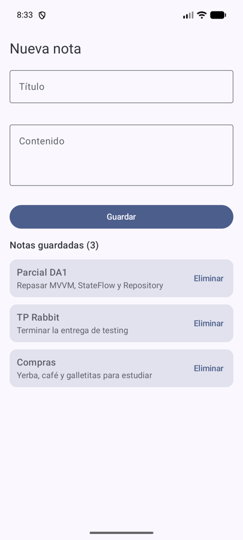
NotaRepositoryDeEjemplo()| Prueba | Resultado |
|---|---|
| Agregar “Parcial DA1” y “Compras” | “Notas guardadas (2)”, ambas en la lista ✅ |
| Eliminar “Parcial DA1” | “Notas guardadas (1)”, queda “Compras” ✅ |
Cambiar una línea del ViewModel a NotaRepositoryDeEjemplo() | Arranca con 3 notas precargadas; presentation/nota/PantallaNota.kt sin cambios ✅ |
1. ¿Qué conoce el Repository sobre Compose?
Nada. No importa ninguna clase de Compose ni de la UI: recibe y devuelve Nota (una data class de Kotlin). Podría usarse igual desde
otra interfaz, un test o un servicio en segundo plano.
2. ¿Por qué esta interfaz ayuda a probar la app?
Porque el ViewModel depende del contrato, no de una implementación: en un test se le puede pasar un Repository falso con datos prefijados o
que falle a propósito, sin archivos ni base de datos, y comprobar las reglas del ViewModel rápido y de forma repetible (eso es el Ej 13).
interface NotaRepository = contrato: qué operaciones hay, no cómo.NotaRepository por constructor y solo habla con el contrato.Consigna: crear ArchivoTextoRepository para leer borrador.txt desde filesDir. Si no existe, devolver texto vacío
o un resultado explícito (documentar la decisión). El ViewModel solicita la lectura y publica el resultado. No abrir el archivo desde un composable.
Distinguir archivo inexistente de una falla real; usar Dispatchers.IO; no guardar referencias a la Activity.
Desafío: inspeccionar el archivo con Device Explorer.
Rama: ej07-leer-archivo · Archivos: domain/repository/BorradorRepository.kt + data/repository/ArchivoTextoRepository.kt, presentation/borrador/BorradorViewModel.kt, presentation/borrador/PantallaBorrador.kt
filesDirCada app tiene una carpeta privada en el almacenamiento interno: /data/data/com.example.mvvmlab/files/ (se obtiene con
context.filesDir). No hace falta pedir permisos, nadie más puede leerla y se borra al desinstalar la app.
sealed interface ResultadoLectura {
data object NoExiste : ResultadoLectura
data class Leido(val texto: String) : ResultadoLectura
}
Si el archivo no existe se devuelve NoExiste y no un texto vacío: “no existe” y “existe pero está vacío” son situaciones distintas,
y con "" no habría forma de diferenciarlas. Una falla real (permiso, disco, archivo dañado) no es un resultado: se informa con una
excepción (IOException).
sealed interface (teoría, diapositiva 12)
Restringe los subtipos a un conjunto conocido por el compilador. Un when sobre un ResultadoLectura es exhaustivo:
si mañana se agrega un caso, el compilador marca todos los when que no lo contemplan. data object = un caso sin datos;
data class = un caso con datos.
Dispatchers.IOinterface BorradorRepository {
suspend fun leer(): ResultadoLectura
}
class ArchivoTextoRepository(carpeta: File) : BorradorRepository {
private val archivo = File(carpeta, "borrador.txt")
override suspend fun leer(): ResultadoLectura =
withContext(Dispatchers.IO) {
if (!archivo.exists()) ResultadoLectura.NoExiste
else ResultadoLectura.Leido(archivo.readText(Charsets.UTF_8)) // puede lanzar IOException
}
}
withContext(Dispatchers.IO): ejecuta el bloque en hilos pensados para disco y red. Leer un archivo en el hilo principal puede
congelar la pantalla (y Android lo detecta como mala práctica).File (la carpeta), no un Context ni una Activity: es lo único que necesita. Si guardara la Activity,
el Repository la mantendría viva después de que Android la destruya (fuga de memoria).Charsets.UTF_8: se indica la codificación para que tildes y ñ se lean bien.class BorradorViewModel(private val repositorio: BorradorRepository) : ViewModel() {
init {
viewModelScope.launch {
try {
when (val r = repositorio.leer()) {
is ResultadoLectura.Leido -> _uiState.update { it.copy(texto = r.texto, mensaje = "Cargado desde borrador.txt") }
ResultadoLectura.NoExiste -> _uiState.update { it.copy(mensaje = "Todavía no hay borrador guardado") }
}
} catch (e: IOException) {
_uiState.update { it.copy(mensaje = "", error = "No se pudo leer el borrador") }
}
}
}
}
when (val r = ...) guarda el resultado en r y elige la rama según su tipo; dentro de is ResultadoLectura.Leido, Kotlin ya sabe que
r tiene texto (smart cast). La pantalla nunca toca el sistema de archivos: recibe BorradorUiState.
companion object {
val Factory: ViewModelProvider.Factory = viewModelFactory {
initializer {
val app = checkNotNull(this[APPLICATION_KEY])
BorradorViewModel(ArchivoTextoRepository(app.filesDir))
}
}
}
// En MainActivity:
private val borradorViewModel: BorradorViewModel by viewModels { BorradorViewModel.Factory }
Ahora el ViewModel recibe un repositorio que necesita filesDir, y Android no sabe crearlo solo. La fábrica le explica cómo.
Usa el Application (vive lo que vive la app, no una pantalla) solo para obtener filesDir. viewModelFactory ya venía en
lifecycle-viewmodel: no se agregaron dependencias. En el Ej 11 esto se ordena en un único lugar.
| Prueba | Resultado |
|---|---|
Abrir sin borrador.txt | “Todavía no hay borrador guardado” (caso NoExiste) ✅ |
Crear el archivo (adb shell run-as ... printf ... > files/borrador.txt) con tres líneas, tildes y “ñandú”, y reabrir | El texto aparece completo al abrir la pantalla ✅ |
Falla real: reemplazar borrador.txt por una carpeta | “No se pudo leer el borrador”; Logcat: FileNotFoundException ... EISDIR (Is a directory). La app no se cierra ✅ |
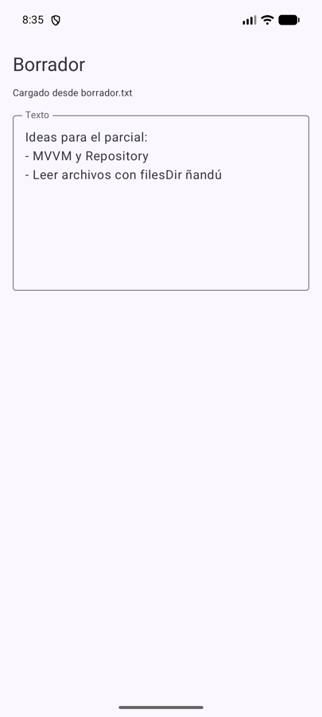
data/data/com.example.mvvmlab/files/borrador.txt. Doble click lo abre;
click derecho → Upload permite subir un archivo propio para probar. Equivalente por consola:
adb shell run-as com.example.mvvmlab cat files/borrador.txt.
1. ¿Dónde está físicamente el archivo?
En el almacenamiento interno del dispositivo, en la carpeta privada de la app: /data/data/com.example.mvvmlab/files/borrador.txt
(también visible como /data/user/0/...). Se borra al desinstalar la app.
2. ¿Otra app puede leerlo sin más?
No. Cada app corre con su propio usuario de Linux y la carpeta /data/data/<paquete> solo es accesible para ese usuario (sandbox).
Otra app no puede abrirla aunque conozca la ruta; para compartir el contenido habría que hacerlo explícitamente (por ejemplo con un Intent, Ej 15).
filesDir = carpeta privada de la app, sin permisos.NoExiste, Leido(texto) y excepción (falla real).Dispatchers.IO y recibe la carpeta, no la Activity.Consigna: agregar al Repository la escritura del borrador en UTF-8. Escribir varias líneas, guardar, cerrar completamente la app y
volver a abrirla: debe recuperarse el contenido. Elegir y documentar si se sobrescribe todo el archivo o se agrega al final.
Desafío: botón “Descartar cambios” que vuelva a leer la versión guardada.
Rama: ej08-guardar-archivo
guardar(texto)interface BorradorRepository {
suspend fun leer(): ResultadoLectura
suspend fun guardar(texto: String)
}
override suspend fun guardar(texto: String) {
withContext(Dispatchers.IO) { // fuera del hilo principal
archivo.writeText(texto, Charsets.UTF_8) // crea o REEMPLAZA el archivo
}
}
appendText (agregar al final) cada guardado duplicaría el contenido anterior.
writeText crea el archivo si no existe y reemplaza lo que tenía. (Agregar al final serviría para un log o una bitácora de eventos.)
data class BorradorUiState(
val texto: String = "", // lo que está en el editor AHORA
val textoGuardado: String = "", // lo que hay en DISCO (última lectura/escritura)
val guardando: Boolean = false,
val mensaje: String = "Leyendo borrador...",
val error: String? = null
) {
val hayCambiosSinGuardar: Boolean get() = texto != textoGuardado
}
Es la misma idea del Ej 2 (“lo escrito no es lo guardado”), ahora con un disco real detrás. hayCambiosSinGuardar es calculada:
se deduce comparando, no se guarda aparte.
fun onGuardar() {
val actual = _uiState.value
if (actual.guardando) return
_uiState.update { it.copy(guardando = true, error = null) }
viewModelScope.launch {
try {
repositorio.guardar(actual.texto)
_uiState.update { it.copy(guardando = false, textoGuardado = actual.texto,
mensaje = "Guardado en borrador.txt") } // DESPUÉS de escribir
} catch (e: IOException) {
_uiState.update { it.copy(guardando = false, error = "No se pudo guardar el borrador") }
}
}
}
fun onDescartarCambios() = cargarDesdeDisco() // desafío: relee el archivo
textoGuardado se actualiza después de que guardar terminó sin error: si la escritura falla, la pantalla sigue mostrando
“sin guardar”, que es la verdad. cargarDesdeDisco() es la misma función que se usa al abrir: descartar = volver a leer lo que hay en disco.
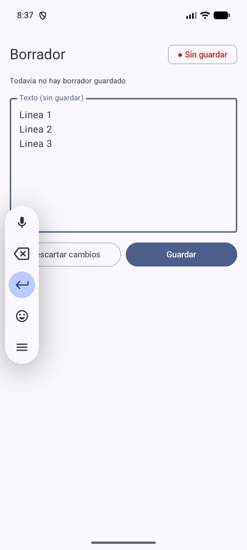
Con el texto igual al de disco se ve “✓ Guardado” y los botones Guardar/Descartar quedan deshabilitados (no hay nada que guardar ni descartar).
| Prueba | Resultado |
|---|---|
| Escribir 3 líneas (con Enter) → Guardar | “✓ Guardado”; cat files/borrador.txt muestra las 3 líneas ✅ |
Cerrar completamente (am force-stop) y volver a abrir | “Cargado desde borrador.txt” con las 3 líneas ✅ |
| Archivo con “Canción: ñandú / Título con acentos áéíóú”, editar y Guardar | Tildes, ñ y salto de línea intactos; bytes UTF-8 (303 263 = ó) ✅ |
| Editar → Descartar cambios | Vuelve exactamente al texto del archivo, “✓ Guardado” ✅ |
1. ¿Qué diferencia hay entre estado del ViewModel y datos en disco?
El estado del ViewModel (texto) está en memoria: cambia en cada tecla, sobrevive a la rotación pero se pierde si muere el proceso.
Los datos en disco (borrador.txt) son persistentes: sobreviven a cerrar la app y reiniciar el teléfono, pero solo cambian cuando se
guarda explícitamente. Por eso pueden diferir, y esa diferencia es “cambios sin guardar”.
2. ¿Qué pasa con caracteres acentuados y saltos de línea?
Se conservan siempre que se use la misma codificación al escribir y al leer (UTF-8 en ambos). En UTF-8 una letra acentuada ocupa 2 bytes;
si se leyera con otra codificación (por ejemplo ISO-8859-1) aparecerían caracteres raros (“Canción”). Los saltos de línea se guardan como el carácter
\n y vuelven igual.
writeText(texto, UTF_8) en Dispatchers.IO: sobrescribe el borrador.texto (memoria) ≠ textoGuardado (disco) → “sin guardar”.Consigna: modelar un estado de carga y uno de error para las operaciones de lectura/escritura. Usar viewModelScope para iniciar
el trabajo y despachar el acceso a disco en IO. Evitar que una excepción cierre la app. Para comprobar la ruta de error, usar temporalmente un Repository
de prueba que lance una excepción controlada (no alterar permisos). Desafío: ofrecer Reintentar si la carga falla.
Rama: ej09-carga-error · Archivo nuevo: data/repository/RepositorioQueFalla.kt
Con cargando: Boolean, error: String? y texto por separado se pueden armar combinaciones absurdas: ¿qué muestra la pantalla si
cargando = true y error != null? La teoría (diapositiva 12) propone un tipo sellado: cada operación está en
exactamente uno de sus estados posibles.
sealed interface EstadoCarga {
data object Cargando : EstadoCarga
data object Listo : EstadoCarga
data class Error(val mensaje: String) : EstadoCarga
}
sealed interface EstadoGuardado {
data object Inactivo : EstadoGuardado // todavía no se intentó
data object Guardando : EstadoGuardado
data object Guardado : EstadoGuardado // SOLO después de completar la escritura
data class Error(val mensaje: String) : EstadoGuardado
}
data class BorradorUiState(
val carga: EstadoCarga = EstadoCarga.Cargando,
val guardado: EstadoGuardado = EstadoGuardado.Inactivo,
val texto: String = "", val textoGuardado: String = "", val existeArchivo: Boolean = false
) {
val puedeEditar: Boolean get() = carga == EstadoCarga.Listo
val puedeGuardar: Boolean get() = puedeEditar && hayCambiosSinGuardar && guardado != EstadoGuardado.Guardando
}
Son dos tipos porque son dos operaciones independientes: puede fallar el guardado con la carga en Listo. Las propiedades calculadas
(puedeEditar, puedeGuardar) dejan las reglas en el estado y no en la vista.
viewModelScope + IO + try/catchprivate fun cargar() {
_uiState.update { it.copy(carga = EstadoCarga.Cargando) }
viewModelScope.launch { // inicia el trabajo
try {
val r = repositorio.leer() // el Repository usa withContext(Dispatchers.IO)
_uiState.update { it.copy(carga = EstadoCarga.Listo, texto = ..., textoGuardado = ...) }
} catch (e: IOException) {
_uiState.update { it.copy(carga = EstadoCarga.Error("No se pudo leer el borrador.")) }
}
}
}
fun onReintentar() = cargar() // desafío
viewModelScope.launch (hilo principal); el Repository despacha
el disco con withContext(Dispatchers.IO). El ViewModel no necesita saber que hay un disco.onReintentar reutiliza la misma función de carga.CancellationException. Es la forma en que Kotlin cancela una corrutina (por ejemplo, cuando el ViewModel se destruye y
viewModelScope se cancela). Un catch (e: Exception) genérico la atraparía, la corrutina seguiría corriendo como si nada y se podría
mostrar un error falso. Por eso se captura solo IOException (las fallas de disco esperables). Si alguna vez se captura
Exception, hay que relanzar la cancelación: catch (e: CancellationException) { throw e }.
class RepositorioQueFalla(
private var fallasDeLectura: Int = 1, // la 1ª lectura falla, la 2ª funciona → probar Reintentar
private val fallarEscritura: Boolean = true,
private val demoraMs: Long = 1200 // para ver "Cargando..." en pantalla
) : BorradorRepository {
override suspend fun leer(): ResultadoLectura {
delay(demoraMs)
if (fallasDeLectura > 0) { fallasDeLectura--; throw IOException("Falla de lectura simulada") }
...
}
override suspend fun guardar(texto: String) {
delay(demoraMs)
if (fallarEscritura) throw IOException("Falla de escritura simulada")
}
}
// Se activa con una constante en la fábrica:
const val USAR_REPOSITORIO_QUE_FALLA = false
Es otra implementación del mismo contrato: el ViewModel y la pantalla no cambian. Esto es lo que el Ej 6 anticipaba (“la interfaz ayuda a probar”).
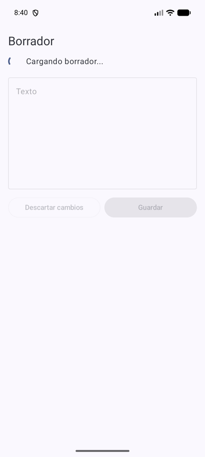
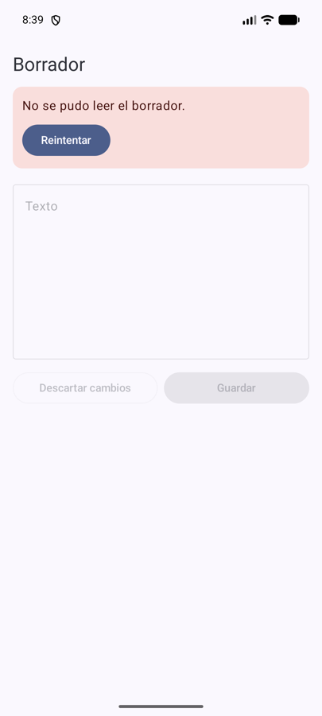
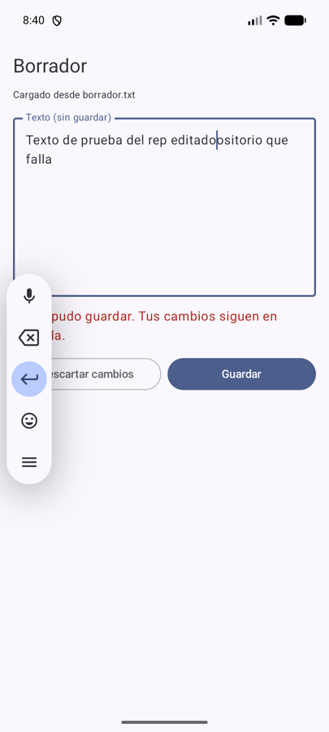
Prueba (con RepositorioQueFalla) | Resultado |
|---|---|
| Abrir la app | “Cargando borrador...” con indicador; editor y botones deshabilitados ✅ |
| Termina la lectura (falla) | Tarjeta roja “No se pudo leer el borrador.” + Reintentar; la app no se cierra ✅ |
| Reintentar | Vuelve a “Cargando...” y luego muestra el texto ✅ |
| Editar → Guardar (escritura falla) | “Guardando...” y después “No se pudo guardar. Tus cambios siguen en pantalla.”; el texto editado se conserva ✅ |
Con el repositorio real (false) | Carga el archivo, Guardar → “✓ Guardado” y el archivo cambia ✅ |
1. ¿Qué excepción no conviene capturar silenciosamente?
CancellationException (ver recuadro): es el mecanismo de cancelación de las corrutinas. Tampoco conviene un catch genérico que “trague”
cualquier error sin mostrarlo ni registrarlo: el problema queda oculto. Acá cada falla se registra en Logcat y se muestra al usuario.
2. ¿Por qué un mensaje “Guardado” sólo corresponde después de completar la escritura?
Porque si se mostrara al pedir guardar y la escritura fallara, el usuario creería que sus datos están a salvo, cerraría la app y los perdería.
El estado tiene que describir la verdad: Guardando mientras se escribe, Guardado solo cuando guardar() terminó sin excepción,
Error si falló.
EstadoCarga, EstadoGuardado) en vez de banderas sueltas; when exhaustivo en la vista.viewModelScope; el Repository despacha el disco en IO.IOException, nunca silenciar CancellationException.